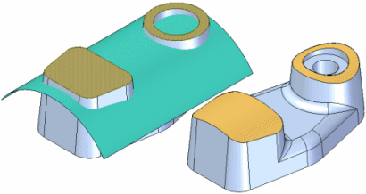

Working with points, curves, and surfaces
You can use commands in Solid Edge to create points, curves, and surfaces. These elements are typically used to construct part features, and are often referred to as construction elements. For example, you can use a single, curved surface to replace several planar faces on a model. Using points, curves, and surfaces helps you model complex design scenarios more quickly.

You can also use these commands when working with foreign data that you have imported into Solid Edge.
For some model types, you may not use the solid modeling commands until very late in the modeling process. Complex, freeform parts often require that you begin the modeling process by defining points and curves that are used to define and control the surfaces that comprise the model. Surfaces are then generated, and in the final steps, the surfaces are stitched together to form a solid model. For more information on this type of workflow, see the Surface construction Help topic.
Construction elements that drive other features have a parent-child relationship with the features they drive. If you delete a construction element that is a parent to another feature, you can invalidate the other feature.